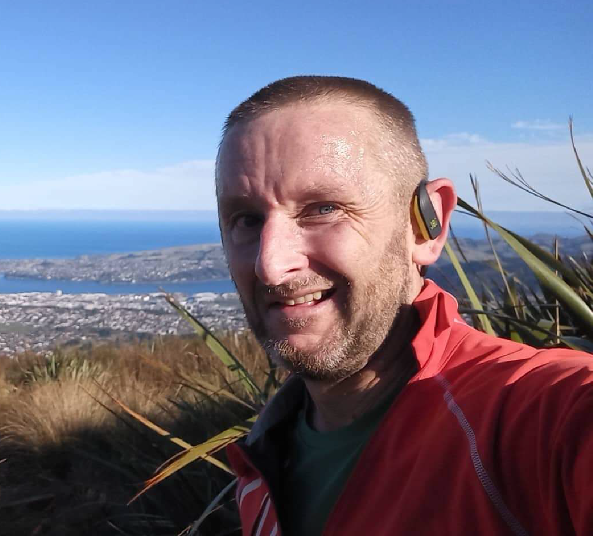
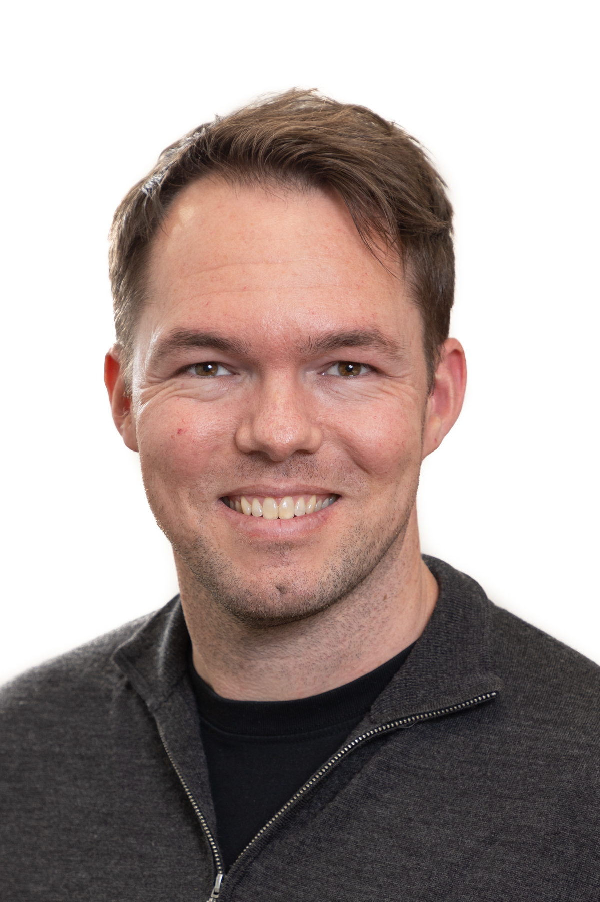

Who are we?
The training team includes members of both Genomics Aotearoa and REANNZ (Research and Education Advanced Network New Zealand), as well as Postdoctoral Fellows and early career researchers who volunteer their time.
All workshops are led by an Instructor: subject matter experts who deliver high-level knowledge of the topic, demonstrating code in real-time.
All workshops are supported by Helpers: knowledgeable people who answer one-off questions or help you to solve issues as they arise.
All workshops have one or more Instructors or Helpers who have received formal training from The Carpentries or an equivalent.
Get to know the team

|
Professor Michael Black (Mik Black, GA)
Co-director of Genomics Aotearoa and Chair of the Bioinformatics Leadership Team, Mik is deeply involved in both research and the development of bioinformatics capability and infrastructure in New Zealand. Based out of the University of Otago’s Department of Biochemistry, Mik’s research focus leans towards cancer and human health.
|
|
|
Bioinformatics Training Coordinator: Dr Chloé van der Burg, GA
Chloé joins GA from the University of Otago, where she previously worked as a postdoctoral researcher exploring the genetic and behavioural mechanisms driving protogynous sex change in the New Zealand Spotty wrasse. Her research background broadly encompasses exploring evolutionary and functional genomics, with a focus on genomic drivers of fundamental and unusual physiological mechanisms in invertebrates, such as tephritid fruit flies and sea anemones. Chloé completed her PhD and undergraduate studies at the Queensland University of Technology (Brisbane, Australia), before moving to Dunedin, New Zealand in 2022. She brings a strong expertise in genomics, transcriptomics and bioinformatics and a passion for teaching to her role as training coordinator.
|
|

|
Dr Matt Bixley, REANNZ
Research Support Specialist Matt Bixley is an R expert, passionate trainer and self-professed data science nerd. With a background in quantitative genetics, Matt’s skills have been employed with research in primary production (AgResearch New Zealand) and human health (Department of Biochemistry, University of Otago).
Connect with Matt on LinkedIn
|
|

|
Bioinformatics Training Coordinator: Dr Tyler McInnes, GA
Tyler completed a PhD in the Centre for Translational Cancer Research at the University of Otago, utilising a bioinformatics skill set to analyse DNA methylation patterns in colorectal cancer. Following a passion for education, Tyler joined the Genetics Teaching Programme as a Teaching Fellow, working closely with Māori and Pacific students while developing and delivering a portfolio of material to assist student learning and improve outcomes. As a Training Coordinator for Genomics Aotearoa, Tyler coordinated a team of trainers, working with members of the community to deliver training material.
Connect with Tyler on LinkedIn
|

|
Dinindu Senanayake, NeSI
Genomics Support Specialist at NeSI, Dini is a ‘fixer’ - widely known and highly regarded in the New Zealand data science community, Dini has used his skills to solve a broad range of challenges. A command line expert with an eye for detail, Dini was involved in both writing and instructing many workshops.
Dini (right, blue t-shirt) worked with Ngoni Faya (left, yellow top). Dini and Ngoni built much of the training portfolio from scratch in the early days of the programme.
|
|
|
Bioinformatics Training Coordinator: Dr Jian Sheng Boey, GA
Boey completed a PhD in Environmental Microbiology at the University of Auckland. Boey worked as a Postdoctoral Fellow and a Training Coordinator, and has bioinformatics skill set that is both broad and deep. Boey has a personal aim of taking complicated, complex data and making it accessible. As a Training Coordinator Boey maintained the Genomics Aotearoa Github repositories and was responsible for the Metagenomics Summer School, an in-person, four-day intensive held annually at the University of Auckland.
Connect with Boey on LinkedIn.
|